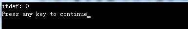
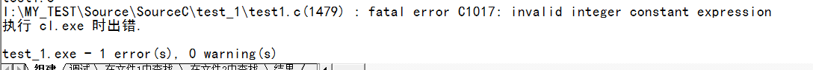

学习STM32偶然发现：在Keil中直接预先定义宏USE_STDPERIPH_DRIVER，但是却没有指定宏的值。而在头文件中判断用的是如下代码：
1 #ifdef USE_STDPERIPH_DRIVER
2 #include "stm32f4xx_conf.h"
3 #endif /* USE_STDPERIPH_DRIVER */由此引发对#if和#ifdef的思考：这两者有什么区别？
1、#ifdef指令说明：如果预处理器已经定义了后面的标识符，那么执行所有指令并编译C代码，直到下一个#else或者#endif出现为止（无论#else和#endif谁先出现）。如果有#else指令，那么，在未定义标识符时会执行#else和#endif之间的所有代码。（C Primer Plus中文版（第五版） 人民邮电出版社 P460）
从以上的说明中可以总结以下几点：
1）#ifdef只是判断后面的标识符有没有定义，而不在乎标识符的值，标识符是0是1对它来说都没有区别，只要预先定义了，执行#ifdef后的代码；
2）#ifdef是和#else搭配使用的，没有#elif搭配之说；
3）#ifdef必须要有#endif配合使用；
示例说明：
1）
1 #define IFTEST1 0
2 #define IFTEST2 1
3
4 int main()
5 {
6 #ifdef IFTEST1
7 printf("ifdef: %d\n", IFTEST1);
8 #else
9 printf("ifdef: not defined!\n");
10 #endif
11 return 0;
12 }
2）
1 //#define IFTEST1 0
2 #define IFTEST2 1
3
4 int main()
5 {
6 #ifdef IFTEST1
7 printf("ifdef: %d\n", IFTEST1);
8 #elif
9 printf("ifdef: not defined!\n");
10 #endif
11 return 0;
12 }编译出错：

2、#if说明：#if指令更像常规的C中的if，#if后跟常量整数表达式。如果表达式为非零值，则表达式为真。在该表达式中可以使用C的关系运算符和逻辑运算符。且可以使用#elif指令扩展if-else序列（C Primer Plus中文版（第五版） 人民邮电出版社 P462）
总结出来的点为：
1）#if是要判断它后面表达式真假的，是真才执行#if后的代码；
2）#if和#elif搭配使用，这就可以用多种条件编译选择；
3）#if也是必须要以#endif配合使用。
示例说明：
1 #define IFTEST1 0
2 #define IFTEST2 1
3
4 int main()
5 {
6 #if IFTEST1 //为假，不执行
7 printf("if : %d\n", IFTEST1);
8 #elif IFTEST2 //为真，执行
9 printf("if : %d!\n", IFTEST2);
10 #else
11 printf("if : not true!\n");
12 #endif
13 return 0;
14 }